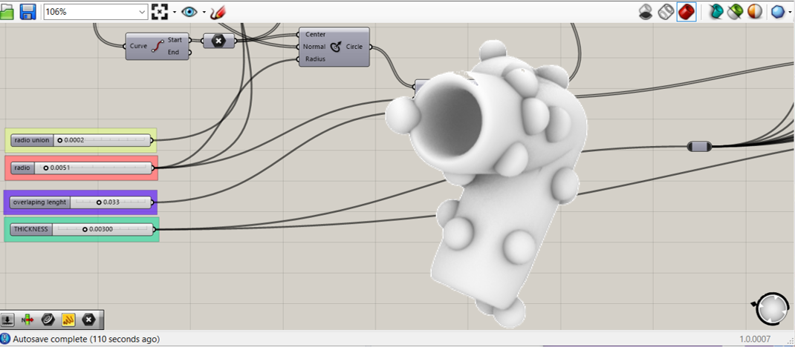

EXPERIMENTING
SKANECT
TO SCAN A NIÑOBEBE MASK
Niñobebe is a ig character and the objective of using this mask is to use it as a filter.
Because of the similarity of a human being, we select a body option. Then we put a mesure that fits the mask and start it.
It took two times to have the final result, at the beginning we didn´t manage to move adequately, but the rotational wheel helped a lot, To scan this I require two people to help, Andrea, who was rotating the wheel, and Emilio, who was controlling and checking the computer? I had to see what I was doing on the screen because otherwise pops up an error.
now, I want to scan everything, the process is simple, you have to wait for the results like 5 or 10 minutos.
It also takes photos to show more realistic scan.


3D PRINT IN PLA
THE JOINTS OF A PELICAN-SHAPED CONTAINER
I already had the shape of a pelican in rhino, and I decided to use jut the head and make the connectors to make a model of it and collect plastic waste. To have better results, I prefer to make tests to check what is more resistant and compare the thickness and quality of printing, using the same joint.
I tried to make it parametric but I couldn´t for the hole pieces. Nevertheless, I manage to make it easy to taste with the sizes and thickness.
In addition, print the shape of it using subD in rhino 7. First, adapt the pelican-shape to just a head, then extract the wireframes, join the curves and use subD multipipe then play with the sizes.
working-progress
3D PRINT WITH BIOMATERIALS
A FLOWERPOT